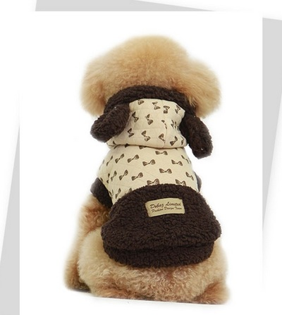

žieminiai drabužiai – korsigita
 Pereiti prie turinio Meniu Mano klasė Klasės naujienos 2020–2021 Klasės naujienos 2019–2020 Klasės naujienos 2018–2019 Klasės naujienos 2017–2018 Klasės naujienos 2016–2017 Klasės naujienos 2015–2016 Klasės naujienos 2014–2015 Klasės naujienos 2013–2014 Apie svetainę Apie mus rašo Apie mane Mano publikacijos
Pereiti prie turinio Meniu Mano klasė Klasės naujienos 2020–2021 Klasės naujienos 2019–2020 Klasės naujienos 2018–2019 Klasės naujienos 2017–2018 Klasės naujienos 2016–2017 Klasės naujienos 2015–2016 Klasės naujienos 2014–2015 Klasės naujienos 2013–2014 Apie svetainę Apie mus rašo Apie mane Mano publikacijos
korsigita
Tinklaraštis specialiesiems pedagogams, tėvams, auginantiems specialiųjų poreikių turinčius vaikus, klausos negalę turinčių žmonių bendruomenei ir visiems tiems, kurie mėgsta ugdymo naujoves
Tag: žieminiai drabužiai
Paskelbta Metodinės priemonės , NaujienosŽIEMA PAVEIKSLĖLIUOSE
Publikuota 5 sausio, 2018 26 sausio, 2018 sukurta korsigitaSupratusi, kad žiemos galime ir nebesulaukti, nusprendžiau pasinaudoti internete esančiais paveikslėliais ir užduočių rinkiniais. Kad vaikai nepamirštų vis rečiau pas mus beužsukančios žiemos, pasinaudokite šiame įraše viskuo, kas jiems primins baltą purų sniegą, žiemos žaidimus, oro ypatumus, šio nuostabaus sezono simbolius, aprangą, žmonių, gyvūnų, paukščių ir augalų veiklas.
Užduočių rinkinukas „Žiema“ piešiant snaiges, einant jų labirintu, skaičiuojant žiemos sezono simbolius, lyginant juos lavins vaikų mąstymą, pastabumą, dėmesį, smulkiąją motoriką. Lauko žaidimus primins nebaigti paveikslėlia i . Žodyną plės, primins skaičius užduotis , prašanti surasti, nuspalvinti ir suskaičiuoti žiemos simbolius. Rankutes lavins užduotis „Žiemos sekimas“, k urią šiandien būtų galima pervadinti „Žiemos paieškomis“ ir „Sniego senio veikla“ 😦 Patiems mažiausiems žiemos ilgesį turėtų apmalšinti smagios dėlionės ( NAUJA! ) .
Mėgstantys varstyti, turėtų džiaugtis spalvingomis varstymo kortelėmis , žaisminga pingvino figūrėle . Pasirodo, varstymas ne tik smulkiąją motoriką, bet ir kūrybiškumą, vaizduotę lavina. Pažiūrėkite, kokias gražias snaiges su vaikais galima pasigaminti!
Šiltos žieminės kepuraitės padės prisiminti abėcėlę, skaičius, o taip pat suteiks nemažai džiaugsmo spalvinant jas. O gal jūsų tarpe yra būsimų dizainerių? Jie galėtų sukurti kalėdinių megztinių kolekciją arba negražius megztinius paversti gražiais 😀 Nepretenduojantiems į dizainerių gildiją pasiūlykite nuspalvinti nesudėtingus žiemos paveikslėlius .
Daugiau smagių, deja tik popierinių, užduočių ir žaidimų rasite mano rinkiniuose „Žiemos džiaugsmai“ ( NAUJA! ) ir Eglutė . O taip pat: Snaigių fiesta ir Viskas apie sniego senius .
Rate this:
Greitai
Mokytojų diena 5 spalio, 2020 Dekite meile vaikams ir savo darbui, tik neperdekite!Bendraukime ir Facebook
Bendraukime ir FacebookKategorijos
Archyvai
Archyvai Pasirinkite mėnesį 2020 m. spalio mėn. (4) 2020 m. rugsėjo mėn. (5) 2020 m. rugpjūčio mėn. (3) 2020 m. liepos mėn. (2) 2020 m. birželio mėn. (6) 2020 m. gegužės mėn. (3) 2020 m. balandžio mėn. (6) 2020 m. kovo mėn. (6) 2020 m. vasario mėn. (5) 2020 m. sausio mėn. (6) 2019 m. gruodžio mėn. (6) 2019 m. lapkričio mėn. (5) 2019 m. spalio mėn. (4) 2019 m. rugsėjo mėn. (4) 2019 m. rugpjūčio mėn. (5) 2019 m. liepos mėn. (3) 2019 m. birželio mėn. (3) 2019 m. gegužės mėn. (4) 2019 m. balandžio mėn. (6) 2019 m. kovo mėn. (4) 2019 m. vasario mėn. (2) 2019 m. sausio mėn. (11) 2018 m. gruodžio mėn. (7) 2018 m. lapkričio mėn. (8) 2018 m. spalio mėn. (5) 2018 m. rugsėjo mėn. (5) 2018 m. rugpjūčio mėn. (3) 2018 m. liepos mėn. (2) 2018 m. birželio mėn. (4) 2018 m. gegužės mėn. (3) 2018 m. balandžio mėn. (3) 2018 m. kovo mėn. (7) 2018 m. vasario mėn. (8) 2018 m. sausio mėn. (5) 2017 m. gruodžio mėn. (6) 2017 m. lapkričio mėn. (4) 2017 m. spalio mėn. (7) 2017 m. rugsėjo mėn. (3) 2017 m. rugpjūčio mėn. (6) 2017 m. liepos mėn. (3) 2017 m. birželio mėn. (3) 2017 m. gegužės mėn. (2) 2017 m. balandžio mėn. (5) 2017 m. kovo mėn. (4) 2017 m. vasario mėn. (5) 2017 m. sausio mėn. (5) 2016 m. gruodžio mėn. (3) 2016 m. lapkričio mėn. (5) 2016 m. spalio mėn. (4) 2016 m. rugsėjo mėn. (7) 2016 m. rugpjūčio mėn. (5) 2016 m. liepos mėn. (2) 2016 m. birželio mėn. (5) 2016 m. gegužės mėn. (2) 2016 m. balandžio mėn. (6) 2016 m. kovo mėn. (10) 2016 m. vasario mėn. (5) 2016 m. sausio mėn. (8) 2015 m. gruodžio mėn. (6) 2015 m. lapkričio mėn. (4) 2015 m. spalio mėn. (6) 2015 m. rugsėjo mėn. (7) 2015 m. rugpjūčio mėn. (6) 2015 m. liepos mėn. (10) 2015 m. birželio mėn. (4) 2015 m. gegužės mėn. (5) 2015 m. balandžio mėn. (5) 2015 m. kovo mėn. (7) 2015 m. vasario mėn. (7) 2015 m. sausio mėn. (5) 2014 m. gruodžio mėn. (7) 2014 m. lapkričio mėn. (3) 2014 m. spalio mėn. (14) 2014 m. rugsėjo mėn. (2) 2014 m. rugpjūčio mėn. (4) 2014 m. liepos mėn. (3) 2014 m. birželio mėn. (4) 2014 m. gegužės mėn. (6) 2014 m. balandžio mėn. (4) 2014 m. kovo mėn. (6) 2014 m. vasario mėn. (6) 2014 m. sausio mėn. (5) 2013 m. gruodžio mėn. (6) 2013 m. lapkričio mėn. (3) 2013 m. spalio mėn. (3) 2013 m. rugsėjo mėn. (5) 2013 m. rugpjūčio mėn. (2) 2013 m. liepos mėn. (2) 2013 m. birželio mėn. (4) 2013 m. gegužės mėn. (5) 2013 m. balandžio mėn. (10) 2013 m. kovo mėn. (7) 2013 m. vasario mėn. (4) 2013 m. sausio mėn. (7) 2012 m. gruodžio mėn. (9) 2012 m. lapkričio mėn. (6) 2012 m. spalio mėn. (7) 2012 m. rugsėjo mėn. (9) 2012 m. rugpjūčio mėn. (3) 2012 m. liepos mėn. (6) 2012 m. birželio mėn. (4) 2012 m. gegužės mėn. (5) 2012 m. balandžio mėn. (3) 2012 m. kovo mėn. (14) 2012 m. vasario mėn. (11) 2012 m. sausio mėn. (15) 2011 m. gruodžio mėn. (3) Follow korsigita on WordPress.comPopuliariausi įrašai
Į PAGALBĄ KLASĖS VADOVUI MOKOMĖS LINKSNIUOTI BŪDVARDŽIUS Sutikite Heloviną su Crayola! GERUMO KALENDORIUSTinklaraščio statistika
2 354 929 Blogą talpina WordPress.com. | Sukūrė: Automattic .